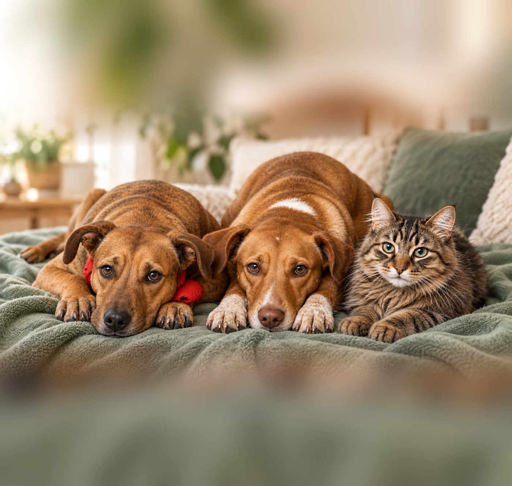
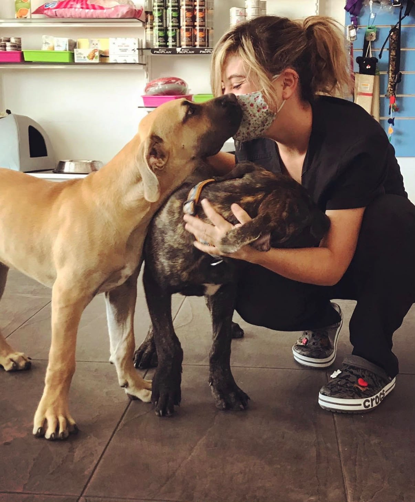
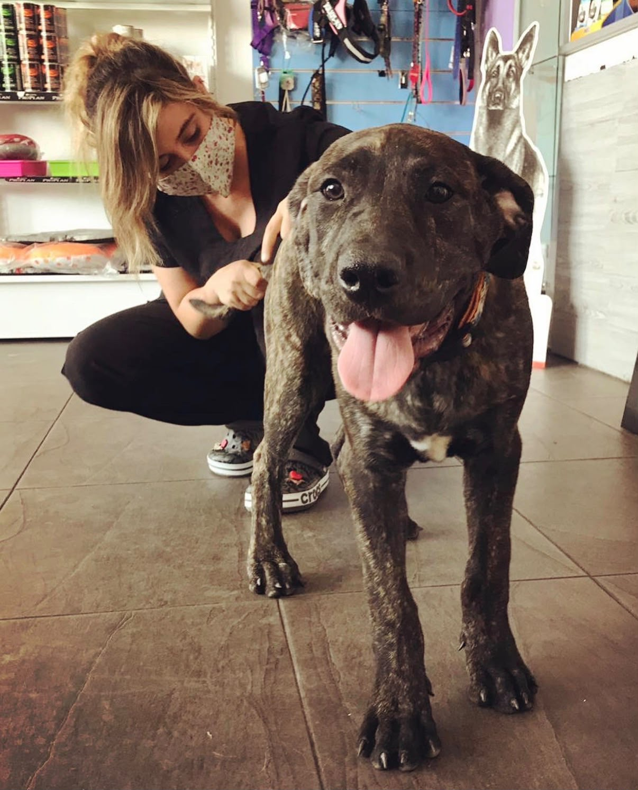
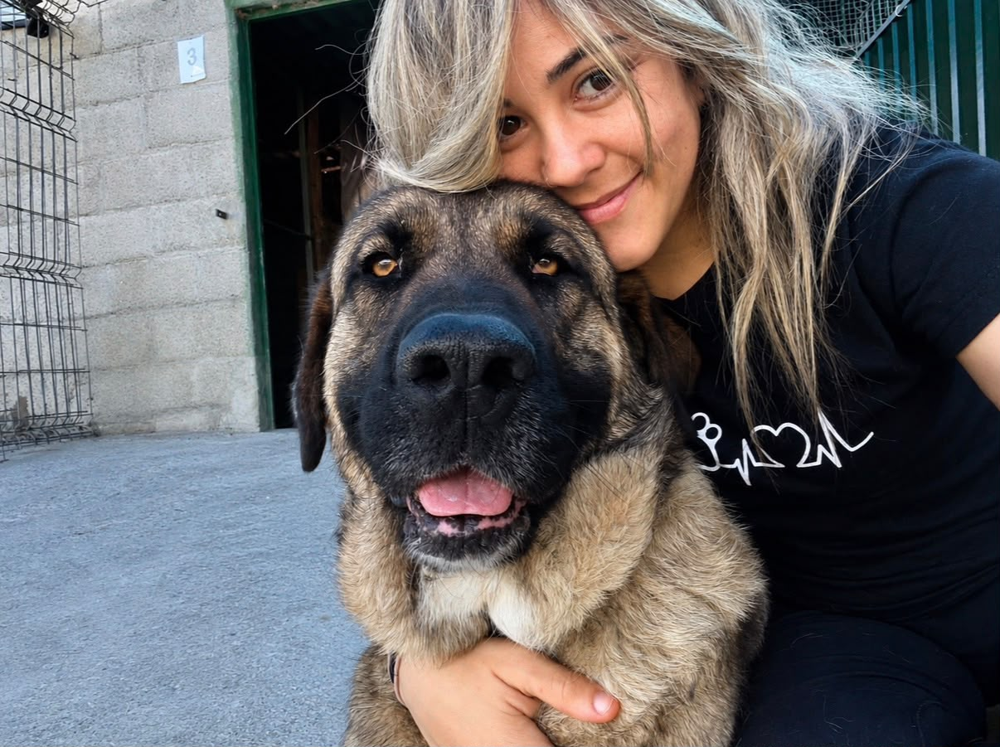
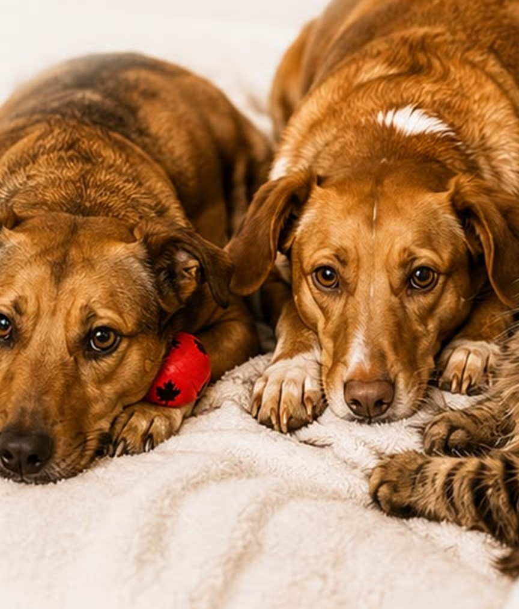
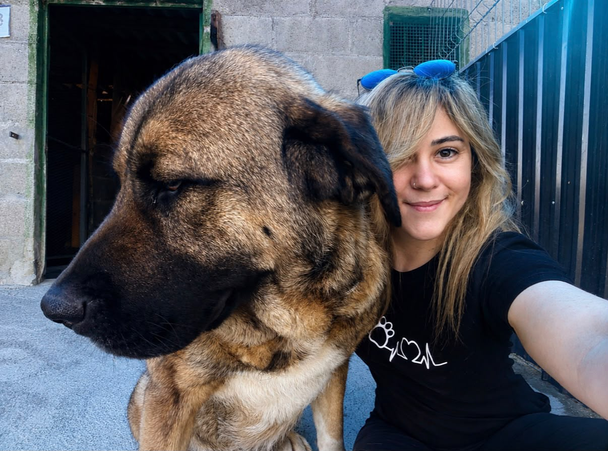
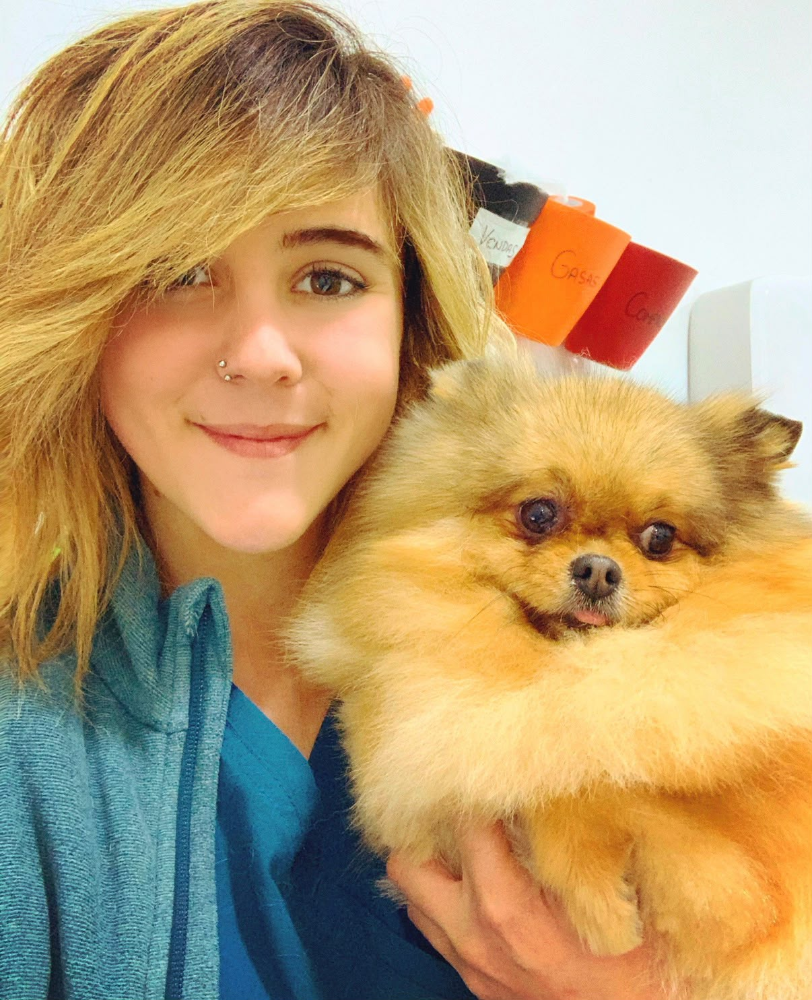
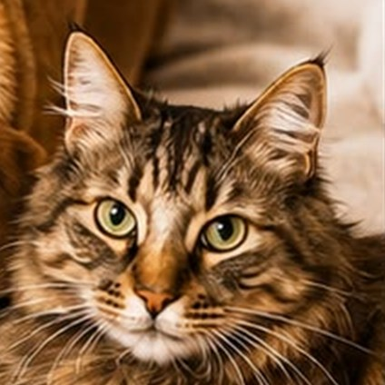

Consultas veterinarias a domicilio
Valoración del estado de salud, diagnóstico y seguimiento.
En Ponferrada, El Bierzo y zonas limítrofes. Menos estrés para ellos. Más tranquilidad para ti.

Menos desplazamientos. Menos estrés. Más bienestar.
En VetMove creemos que cuidar de un animal también significa cuidar de su entorno, de sus emociones y de las personas que lo acompañan.
Por eso llevamos la atención veterinaria hasta donde ellos se sienten seguros: su propia casa.
Realizamos en domicilio una amplia variedad de servicios veterinarios, con una atención profesional, cercana y personalizada, adaptada a las necesidades de cada animal y de cada familia.

Desde una revisión rutinaria hasta el seguimiento de un problema de salud, VetMove permite realizar muchos procedimientos veterinarios sin necesidad de desplazamientos ni esperas en una clínica.
Nuestro objetivo es sencillo: que la veterinaria se adapte a ellos, y no ellos a la veterinaria.

Llevamos la atención veterinaria hasta tu hogar para que tu animal pueda recibir los cuidados que necesita sin salir de su entorno y con el menor estrés posible.
Valoración del estado de salud, diagnóstico y seguimiento.
Prevención y mantenimiento de su salud durante todas las etapas de su vida.
Controles periódicos y seguimiento personalizado de animales con necesidades específicas.
Determinaciones y procedimientos que pueden realizarse cómodamente en casa.
Atención de problemas frecuentes y valoración de las necesidades individuales de cada animal.
Y cuando una situación requiera medios o procedimientos que no puedan realizarse a domicilio, te orientaremos y coordinaremos la atención necesaria.
Valoración y atención veterinaria en domicilio.
Realizamos consultas para valorar el estado de salud de tu animal, detectar posibles problemas y establecer las pautas necesarias para su cuidado y seguimiento.
Prevenir es cuidar.
Nos ocupamos de los principales cuidados preventivos para mantener a tu animal protegido y detectar de forma precoz posibles problemas de salud.
Cuando necesitamos saber más, podemos hacerlo en casa.
Realizamos determinadas pruebas y toma de muestras en el propio domicilio, evitando desplazamientos innecesarios.
El cuidado continúa después de la consulta.
Para animales que necesitan controles o cuidados periódicos, el domicilio puede ser un entorno especialmente cómodo y tranquilo.
Porque la piel también habla.
Valoramos problemas frecuentes de piel, pelo y oídos y establecemos las pautas necesarias para su diagnóstico, tratamiento y seguimiento.
Hay momentos en los que nuestros animales necesitan algo más que una atención veterinaria.
Animales mayores, con enfermedades crónicas o en fases avanzadas de enfermedad pueden beneficiarse especialmente de una atención tranquila, cercana y continuada en su propio hogar.
Valoramos cada situación de forma individual y acompañamos a la familia en la toma de decisiones relacionadas con su bienestar y calidad de vida.

VetMove nace para acercar la veterinaria a casa, pero no todo puede ni debe hacerse a domicilio.
Cuando tu animal necesite pruebas, tratamientos o medios que requieran una clínica veterinaria, te indicaremos las opciones disponibles y, si es necesario, coordinaremos su derivación con profesionales de confianza.
Nuestro compromiso es ofrecerle la atención que necesita, esté donde esté.
Cada animal es diferente. Por eso no trabajamos con soluciones estándar.
Observamos. Valoramos. Prevenimos. Acompañamos.
Y siempre con un objetivo: su bienestar.
¿Necesitas una visita veterinaria?

Hay animales para los que ir a una clínica no es fácil. El viaje en coche, el transportín, la sala de espera, otros animales, los ruidos o simplemente salir de su entorno pueden generar ansiedad o estrés.
En VetMove creemos que, siempre que sea posible, la atención veterinaria puede hacerse de otra manera: vamos hasta ellos. Nos desplazamos hasta tu domicilio para ofrecer una atención veterinaria profesional, cercana y personalizada, en un entorno conocido y tranquilo.
Tu animal permanece en un entorno que conoce y donde se siente segura.
Sin desplazamientos, sin transportines y sin esperas innecesarias.
Podemos dedicar tiempo a conocer a tu animal y observarla en su entorno habitual.
Tú también formas parte de sus cuidados. Te acompañamos y resolvemos tus dudas de forma cercana.
La atención a domicilio facilita mantener una relación veterinaria estable y realizar controles periódicos.
Dependiendo de las necesidades de cada animal, podemos realizar en domicilio:
Cada visita se adapta al animal y a la situación concreta.
Cuando atendemos a un animal en casa no solo vemos al paciente. Vemos cómo vive, cómo se relaciona, cómo se mueve y qué factores de su entorno pueden influir en su salud y bienestar.
Porque para nosotros la veterinaria no consiste únicamente en tratar enfermedades. Consiste también en prevenir, acompañar y cuidar.
Y si en algún momento necesita una atención que requiera medios o procedimientos de una clínica, te lo indicaremos y buscaremos contigo la mejor opción.
Y desde ahí construimos nuestra forma de trabajar.

Porque conocemos a tu animal en su propio entorno, podemos observar aspectos de su comportamiento y de su día a día que también forman parte de su salud.
Una visita veterinaria puede ser mucho más tranquila cuando el animal no tiene que subir al coche, viajar, esperar en una sala llena de estímulos ni enfrentarse a un entorno desconocido.
Ponferrada, El Bierzo y zonas limítrofes
¿Necesitas una visita?
Cuatro pasos desde tu mensaje hasta la consulta en el salón de tu casa.
Escríbenos por WhatsApp o llámanos y cuéntanos qué necesita.
Buscamos el momento más cómodo para ti y para él.
Acudimos a tu domicilio con todo el material necesario.
Consulta sin prisas y seguimiento posterior si hace falta.
Con VetMove tendrás acceso a la información de salud de tu animal y recibirás recordatorios para que no tengas que preocuparte de cuándo toca su próxima vacuna o desparasitación.

Este servicio está incluido sin coste adicional.
Veterinaria y fundadora de VetMove.
Mi camino en la veterinaria comenzó en la Universidad Alfonso X el Sabio, donde estudié el Grado en Veterinaria, que finalicé en 2019. Desde 2018, he desarrollado mi trayectoria profesional en Madrid, trabajando principalmente con perros y gatos en los ámbitos de la medicina general, la cirugía y la medicina preventiva, y acompañando a numerosas familias en el cuidado de sus animales.
Con los años, he aprendido que la veterinaria es mucho más que diagnosticar y tratar enfermedades. Cada animal es único, tiene su propio carácter, sus necesidades y su manera de vivir una consulta. Y detrás de cada paciente hay una familia que se preocupa por él, que puede tener dudas o miedos y que necesita sentirse escuchada y acompañada.
Mi interés por seguir aprendiendo me llevó a especializarme en Dermatología Veterinaria, realizando un posgrado en esta área. También completé un posgrado en Cirugía de Tejidos Blandos, ampliando así mis conocimientos para ofrecer una atención cada vez más completa.
Actualmente continúo avanzando en mi formación para obtener la acreditación internacional de la ISVPS en Dermatología de Pequeños Animales.
Después de varios años trabajando en clínica, sentí que quería recuperar algo que para mí es fundamental en esta profesión: tener tiempo para cada paciente, escuchar, observar y conocer realmente al animal que tengo delante.
También he visto muchas veces cómo algunos animales viven la visita a la clínica con miedo, ansiedad o estrés. Y pensé que, en determinadas situaciones, quizá no necesitaban adaptarse ellos a nosotros, sino que fuéramos nosotros quienes nos acercásemos a ellos.
Así nació VetMove.
Un proyecto que nace de mi experiencia como veterinaria, pero también de mi forma de entender esta profesión: una veterinaria cercana, individualizada y basada en la confianza.
Quiero que VetMove sea mucho más que un servicio veterinario a domicilio. Quiero acompañaros en las diferentes etapas de la vida de vuestros animales, desde la prevención y el cuidado diario hasta esos momentos en los que necesitan una atención especial.
Porque cuidar de un animal también significa conocerla, respetarla, entenderla y hacer todo lo posible para que se sienta segura.
Quiero que, cuando contactéis conmigo, sintáis que detrás de VetMove hay una persona que va a escucharos, implicarse y cuidar de vuestro animal con la profesionalidad que merece y la cercanía que necesita.
Porque detrás de cada paciente hay una historia, una familia y un vínculo que merece ser cuidado. Y mi objetivo es poder formar parte de ese vínculo, ayudándoos a proporcionarles una vida más sana, tranquila y feliz.
Para mí, la veterinaria no es solamente una profesión. Es también una forma de devolverles, de alguna manera, todo aquello que hacen por nosotros cada día.
María Isern La veterinaria que llega hasta ellos.
Sabemos que cada animal y cada familia son diferentes. Por eso, antes de pedir una cita, es normal que quieras saber cómo funciona nuestro servicio. Aquí respondemos algunas de las preguntas más habituales.

VetMove presta atención veterinaria a domicilio en Ponferrada y diferentes localidades de El Bierzo y zonas limítrofes.
Si no estás seguro de si llegamos hasta tu localidad, consúltanos y te informaremos.
Sí. Atendemos principalmente perros y gatos, tanto adultos como cachorros y animales mayores.
Si tienes otro tipo de animal, puedes consultarnos previamente para valorar si podemos atenderla o indicarte la mejor alternativa.
En función de las necesidades de tu animal, podemos realizar consultas, revisiones, vacunaciones, desparasitaciones, identificación mediante microchip, determinadas analíticas y toma de muestras, curas, seguimientos y otros procedimientos.
Si tienes dudas sobre un servicio concreto, pregúntanos antes de solicitar la cita.
Sí. Las vacunaciones pueden realizarse a domicilio siempre que el estado de salud del animal permita llevarlas a cabo.
Además, en cada consulta para vacunación se realizará un examen completo de revisión general y actualizar sus cuidados preventivos.
En muchos casos, sí.
Podemos realizar la toma de determinadas muestras en el domicilio y gestionar su análisis según las necesidades del animal.
Te explicaremos en cada caso cómo se realiza y cuándo estarán disponibles los resultados.
Sí, puede ocurrir.
La atención a domicilio permite resolver muchas situaciones, pero no sustituye a una clínica veterinaria cuando son necesarios medios diagnósticos, hospitalización, cirugía u otros procedimientos específicos.
Si tu animal necesita atención clínica, te lo indicaremos y te orientaremos sobre el siguiente paso.
Las situaciones urgentes se valoran caso por caso y según disponibilidad.
Cuando contactes con nosotros, te haremos unas preguntas para valorar la situación y determinar cuál es la opción más adecuada para tu animal.
En situaciones que requieran atención hospitalaria inmediata, te indicaremos que acudas directamente a un servicio veterinario de urgencias.
Precisamente este es uno de los motivos por los que la atención a domicilio puede resultar especialmente interesante.
Al permanecer en su entorno habitual, evitamos buena parte de los estímulos asociados al desplazamiento y a la visita a una clínica. Menos estrés para ellos. Más tranquilidad para todos.
Sí. Son precisamente algunos de los pacientes que más pueden beneficiarse de la atención veterinaria en casa.
Evitar desplazamientos puede hacer que las revisiones y los seguimientos sean mucho más cómodos y tranquilos.
Por supuesto.
De hecho, la atención a domicilio puede resultar especialmente cómoda para familias con varios animales, ya que podemos organizar la visita para atenderlas de forma conjunta, cuando sea adecuado.
Además de la atención a domicilio, tendrás acceso al historial veterinario de tu animal y recibirás avisos cuando se acerquen las fechas de sus vacunas y desparasitaciones, sin coste adicional. Te lo contamos en Tu animal, siempre bajo control.
El pago se realizará al finalizar la visita mediante los medios disponibles en ese momento.
Puedes contactar con VetMove por WhatsApp o consultar el teléfono al pie de esta página.
Cuando contactes, te preguntaremos brevemente qué necesita tu animal, dónde te encuentras y qué disponibilidad tienes para poder organizar la visita.
En caso de necesitar enviar documentación, resultados de pruebas diagnósticas o informes anteriores, lo podrás enviar por e-mail a isern@vetmove.es.
No queremos que tengas dudas antes de pedir ayuda.
Cuéntanos qué le ocurre a tu animal y veremos contigo cuál es la mejor opción.
Ponferrada · El Bierzo · Zonas limítrofes
¿Necesitas una cita?
Cuéntanos qué necesita tu animal y dónde te encuentras. Te indicaremos disponibilidad y si el servicio a domicilio es adecuado para tu caso.
Menos estrés para ellos, más tranquilidad para ti.